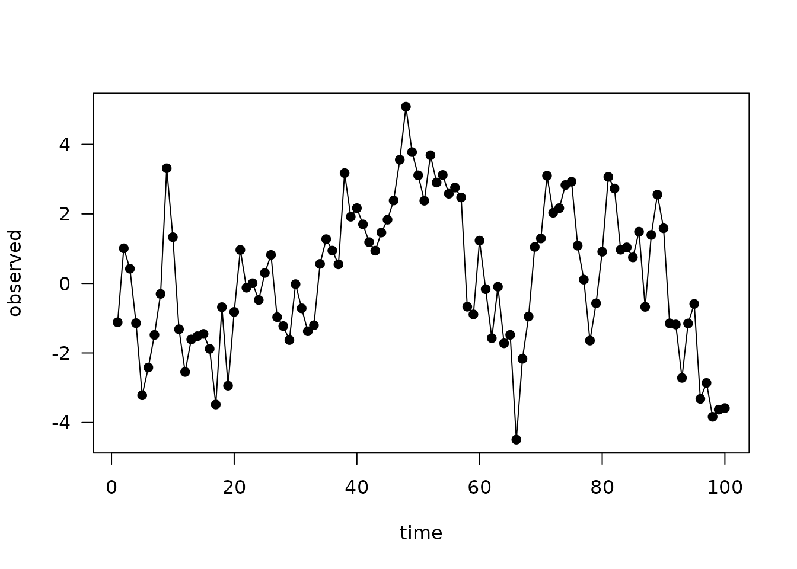
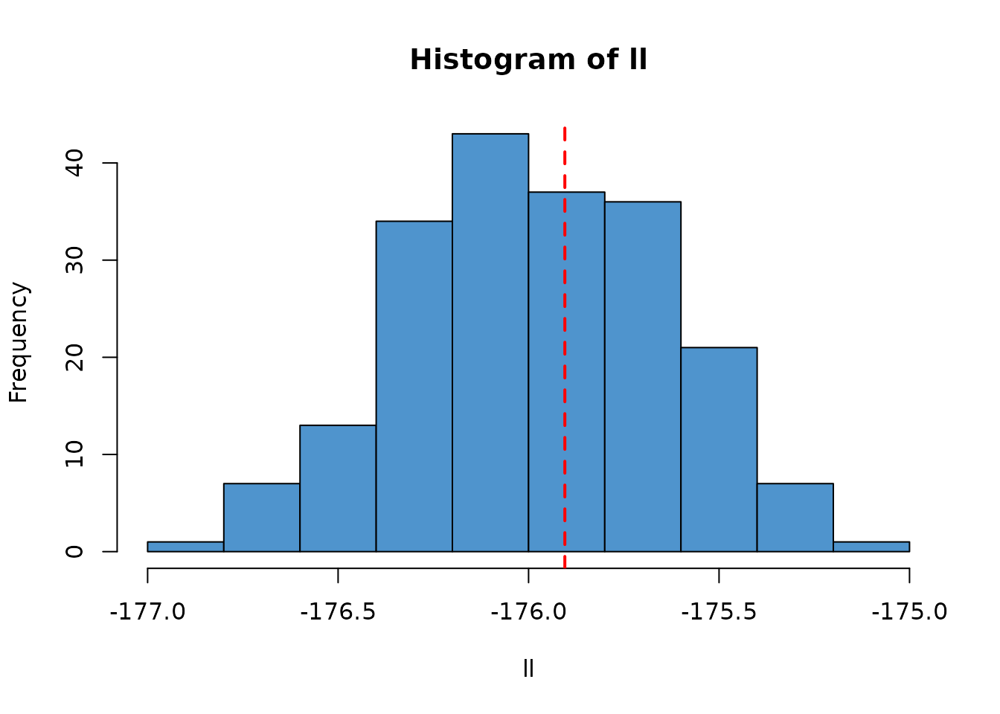
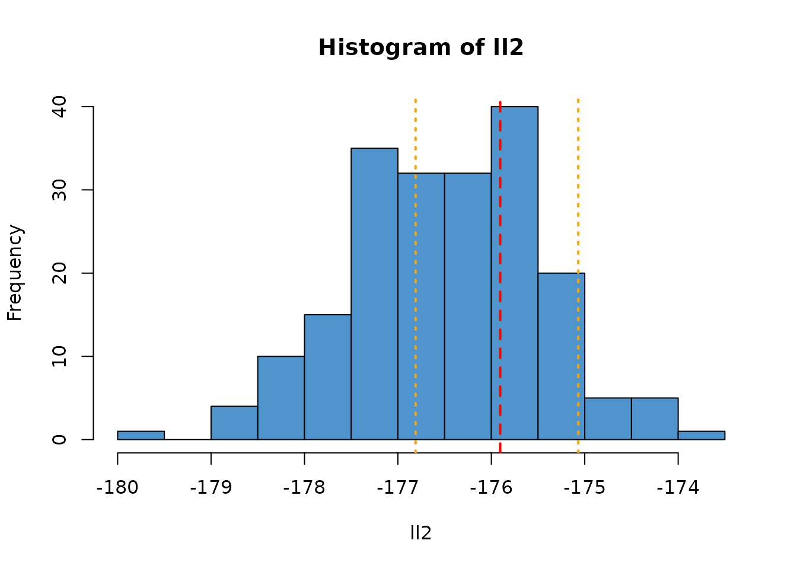
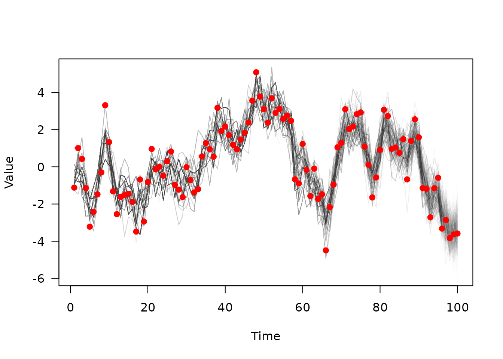

One of our aims with dust was to enable the creation of
fast particle filters. This vignette outlines the steps in implementing
the comparison directly as part of the model, and compares the result
against a known deterministic result.
We start with a simple example, a model of volatility. For completeness (and because the maths around this will need adding later!) we show the full code here:
#include <dust2/common.hpp>
// [[dust2::class(volatility)]]
// [[dust2::time_type(discrete)]]
// [[dust2::has_compare()]]
// [[dust2::parameter(alpha)]]
// [[dust2::parameter(sigma)]]
// [[dust2::parameter(gamma)]]
// [[dust2::parameter(tau)]]
class volatility {
public:
volatility() = delete;
using real_type = double;
struct shared_state {
real_type alpha;
real_type sigma;
real_type gamma;
real_type tau;
};
struct internal_state {};
struct data_type {
real_type observed;
};
using rng_state_type = monty::random::generator<real_type>;
static dust2::packing packing_state(const shared_state& shared) {
return dust2::packing{{"x", {}}};
}
static shared_state build_shared(cpp11::list pars) {
const auto alpha = dust2::r::read_real(pars, "alpha", 0.91);
const auto sigma = dust2::r::read_real(pars, "sigma", 1);
const auto gamma = dust2::r::read_real(pars, "gamma", 1);
const auto tau = dust2::r::read_real(pars, "tau", 1);
return shared_state{alpha, sigma, gamma, tau};
}
static void update_shared(cpp11::list pars, shared_state& shared) {
shared.alpha = dust2::r::read_real(pars, "alpha", shared.alpha);
shared.sigma = dust2::r::read_real(pars, "sigma", shared.sigma);
shared.gamma = dust2::r::read_real(pars, "gamma", shared.gamma);
shared.tau = dust2::r::read_real(pars, "tau", shared.tau);
}
static data_type build_data(cpp11::list r_data, const shared_state& shared) {
auto data = static_cast<cpp11::list>(r_data);
const auto observed = dust2::r::read_real(data, "observed", NA_REAL);
return data_type{observed};
}
static void initial(real_type time,
const shared_state& shared,
internal_state& internal,
rng_state_type& rng_state,
real_type * state_next) {
state_next[0] = monty::random::normal<real_type>(rng_state, 0, 1);
}
static void update(real_type time,
real_type dt,
const real_type * state,
const shared_state& shared,
internal_state& internal,
rng_state_type& rng_state,
real_type * state_next) {
const auto x = state[0];
state_next[0] = shared.alpha * x +
shared.sigma * monty::random::normal<real_type>(rng_state, 0, 1);
}
static real_type compare_data(const real_type time,
const real_type * state,
const data_type& data,
const shared_state& shared,
internal_state& internal,
rng_state_type& rng_state) {
const auto x = state[0];
return monty::density::normal(data.observed, shared.gamma * x, shared.tau,
true);
}
};
volatility <- dust_compile("examples/volatility.cpp", quiet = TRUE)To demonstrate the approach, we simulate some data from the model itself. We have to include the simulation of the observation process here which adds an additional sample from the normal distribution.
These are the parameters we will use:
pars <- list(
# Generation process
alpha = 0.91,
sigma = 1,
# Observation process
gamma = 1,
tau = 1)
data <- local({
sys <- dust_system_create(volatility, pars)
dust_system_set_state_initial(sys)
times <- seq(1, 100, by = 1)
observed <- drop(dust_system_simulate(sys, times)) + rnorm(length(times))
data.frame(time = times, observed = observed)
})
head(data)
#> time observed
#> 1 1 -1.1184632
#> 2 2 1.0098167
#> 3 3 0.4216554
#> 4 4 -1.1422005
#> 5 5 -3.2172936
#> 6 6 -2.4180258
plot(observed ~ time, data, type = "o", pch = 19, las = 1)
Now, we construct a particle filter:
filter <- dust_filter_create(volatility, 0, data, n_particles = 1000)
filter
#>
#> ── <dust_likelihood (volatility)> ──────────────────────────────────────────────
#> ℹ 1000 particles
#> ℹ The likelihood is stochastic
#> ℹ This system runs in discrete time with dt = 1
#> ℹ Use coef() (`?stats::coef()`) to get more information on parametersRunning the particle filter simulates the process on all particles and compares at each timestep the simulated data with your observed data using the provided comparison function. It returns the log-likelihood:
dust_likelihood_run(filter, pars)
#> [1] -175.962This is stochastic and each time you run it, the estimate will differ:
dust_likelihood_run(filter, pars)
#> [1] -175.9821In this case the model is simple enough that we can use a Kalman Filter to calculate the likelihood exactly:
kalman_filter <- function(pars, data) {
y <- data$observed
mu <- 0
s <- 1
log_likelihood <- 0
for (t in seq_along(y)) {
mu <- pars$alpha * mu
s <- pars$alpha^2 * s + pars$sigma^2
m <- pars$gamma * mu
S <- pars$gamma^2 * s + pars$tau^2
K <- pars$gamma * s / S
mu <- mu + K * (y[t] - m)
s <- s - pars$gamma * K * s
log_likelihood <- log_likelihood + dnorm(y[t], m, sqrt(S), log = TRUE)
}
log_likelihood
}
ll_k <- kalman_filter(pars, data)
ll_k
#> [1] -175.9048Unlike the particle filter the Kalman filter is deterministic:
kalman_filter(pars, data)
#> [1] -175.9048
ll <- replicate(200, dust_likelihood_run(filter, pars))
hist(ll, col = "steelblue3")
abline(v = ll_k, col = "red", lty = 2, lwd = 2)
As the number of particles used changes, the variance of this estimate will change. For example, here is a filter with only 100 particles (1/10th the number as in the previous). We plot the range of observed likelihoods from the larger filter as orange vertical lines.
filter2 <- dust_filter_create(volatility, 0, data, n_particles = 100)
ll2 <- replicate(200, dust_likelihood_run(filter2, pars))
hist(ll2, col = "steelblue3")
abline(v = ll_k, col = "red", lty = 2, lwd = 2)
abline(v = range(ll), col = "orange", lty = 3, lwd = 2)
If you run a particle filter with
save_trajectories = TRUE, it will record the (filtered)
trajectories, which you can then extract with
dust_filter_last_trajectories():
dust_likelihood_run(filter, pars, save_trajectories = TRUE)
#> [1] -175.9139
trajectories <- dust_likelihood_last_trajectories(filter)
dim(trajectories)
#> [1] 1 1000 100This is a n_state (here 1) x n_particles
(1000) x n_time (100) 3d array, but we will drop the first
rank of this for plotting, and transpose so that time is the first
axis:
matplot(data$time, t(drop(trajectories)), xlab = "Time", ylab = "Value",
las = 1, type = "l", lty = 1, col = "#00000002")
points(observed ~ time, data, col = "red", pch = 19)
Here you can see the sampled trajectories fitting the observed data, with fewer extant trajectories the further back in time you go (fewer, thicker, lines due to the sampling process).